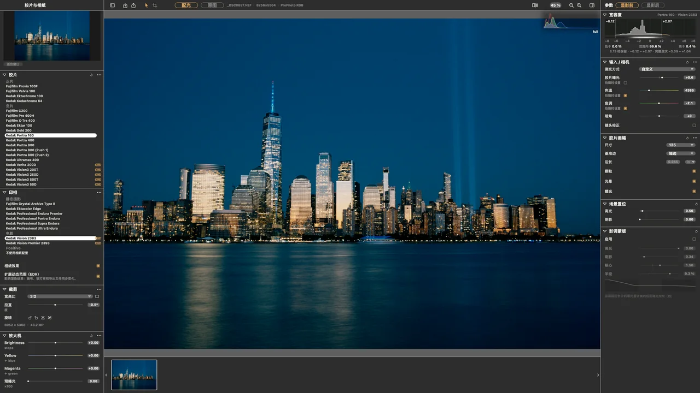

SpektraLab不模仿胶片的结果，模拟胶片的过程。

市面上的胶片模拟大多是套在 RGB 上的 LUT，好用但不真实；开源物理模型 spektrafilm 按光谱计算，真实，却只有 Python 命令行，4500 万像素一张约 30 秒。SpektraLab 把后者做成摄影师能用的 macOS 应用：打开一张 RAW，选好胶片和相纸，约一秒出图。
- 4500 万像素出图，参考实现约 30 s
- 1.13s
- 1 亿像素峰值内存，原 27.4 GB
- 13.7GB
- 导出与屏幕软打样的差异
- 0px
- 个测试用例，守住每一次改动
- 560